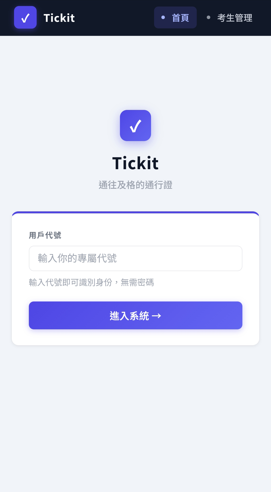
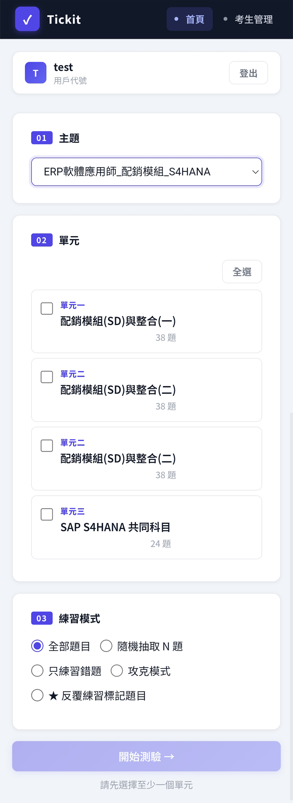
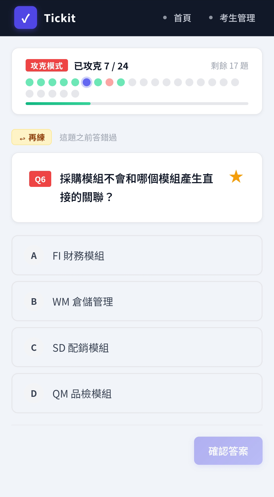
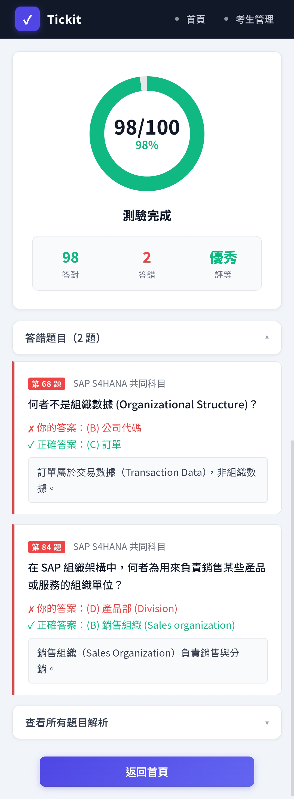
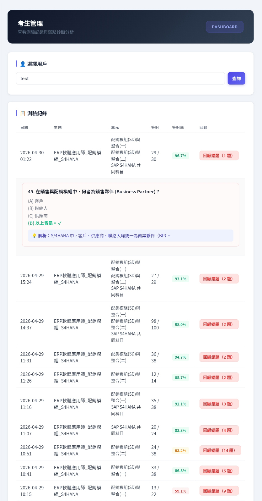
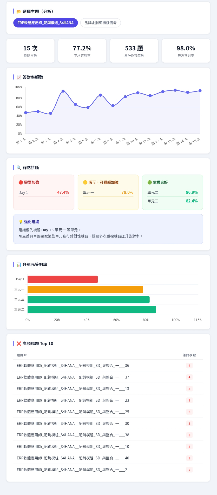

Tickit（通往及格的通行證）是一個為備考「品牌企劃師初級」自製的線上刷題 Web App，後擴充至 ERP 軟體應用師。先以 Prompt Engineering 引導 Gemini 以嚴格 Markdown 格式生成題目與解析，再以完整架構規劃驅動 Claude Code 開發純前端應用。平台支援多使用者識別、主題與單元混搭出題、隨機抽題（含題組保護邏輯），完成後公布成績並自動分析弱點，所有紀錄永久保存於 Supabase 雲端資料庫。
開發工作流程
Gemini 出題
Prompt 控制格式
→
Markdown 題庫
Obsidian 管理
→
parser.js 解析
Regex-based
→
Web App
純前端 HTML/JS
→
Supabase
雲端持久化
我在這個專案中做了什麼
我的職責
- 設計 Prompt 框架，控制 Gemini 出題格式與風格
- 規劃整體三頁面應用架構與資料庫欄位設計
- 以完整開場白向 Claude Code 說明需求，驅動程式碼生成
- 主導每次版本迭代方向（重構技術棧、UI 品牌化、部署遷移）
- 命名品牌 Tickit（Tick + it + Ticket，✓ 為 Logo 核心）
- 自主完成 Supabase 雲端資料庫設定與 GitHub Pages 部署
- 以 Obsidian 持續維護 Markdown 題庫（跨主題擴充）
AI 工具分工
- Gemini：依格式規範生成題目、四選項、正確答案與詳細解析
- Claude Code：完整純前端應用架構（HTML / CSS / Vanilla JS）
- Claude Code：Markdown 解析器
parser.js（Regex-based） - Claude Code：資料庫模組
db.js（Supabase REST API） - Claude Code：Tickit 品牌視覺設計語言
style.css - Claude Code：多版本迭代 bug 修正與版面重構
Prompt 策略：讓 Gemini 成為出題者
設計出題格式規範，讓 Gemini 輸出符合 parser.js 嚴格解析要求的 Markdown 題庫。
Prompt 策略：讓 Gemini 成為出題者
Gemini 出題的難點在於格式控制——題目、選項、答案、解析必須在同一份 Markdown 檔案中，格式嚴格符合
parser.js 的解析規則。第一次要求時格式不符（選項換行錯誤、分隔字串不一致），追加 Prompt 明確指定格式後才達標。Day 7 與 Day 12 刻意要求「將前期概念融合為商業情境題」，考驗情境理解而非單純記憶。
【給 Gemini 的出題指令（節錄）】 以下是「品牌企劃師初級」Day 1 的考試範圍： 品牌相關知識 (一) - 品牌的定義、品牌元素選擇準則（意義性、保護性等）、設計概論與品牌視覺。 請生成 10 題單選題，格式必須嚴格遵守： 1. 題目文字 (A) 選項一 (B) 選項二 (C) 選項三 (D) 選項四 2. 下一題... 解答與詳細解析 1. (B) 解析說明... 2. (A) 解析說明...
驅動 Claude Code 的架構開場白
以完整的技術選型與三頁面需求說明作為起點，避免後續大量來回修正。
驅動 Claude Code 的架構開場白
給 Claude Code 的第一段 Prompt 是整個開發的起點，必須讓 AI 清楚理解需求邊界、技術選型與部署方式，才能避免後續大量修正。
於 C:\Users\Master\Projects 建立資料夾 Tickit。
目標：製作一個支援多使用者的線上測驗 Web App，
題庫由 Obsidian 匯出的 Markdown 檔案管理，不定期更新。
架構規劃如下：
首頁：用戶識別（輸入代號，無需密碼）；選擇主題與單元（支援多選混搭）；
選擇全部或隨機 N 題。
測驗頁：逐題顯示，完成後才公布成績（答對 / 總題數）；
列出錯題與解析；可展開所有解析。
考生管理頁：過往測驗紀錄；弱點分析（依題型統計錯誤模式，提供強化建議）。
完成後上傳 GitHub，部署至 GitHub Pages（靜態網站，docs/ 資料夾）。
三頁面功能架構
① 首頁（index.html）— 測驗設定
- 用戶代號識別（無需密碼，輸入代號即建立或讀取帳戶）
- 選擇測驗主題（自動讀取
manifest.json，支援多主題擴充） - 選擇單元（多選混搭，即時顯示各單元可用題數）
- 選擇題數模式：全部出題 / 隨機 N 題
- 題組保護邏輯：隨機模式以「承上題」題組為單位抽取，不拆散情境題
② 測驗頁（quiz.html）— 作答 & 成績
- 逐題顯示題目與四選項（作答中不即時顯示對錯，避免刷答干擾）
- 頂部進度條 + 題號標籤，即時呈現作答進度
- 送出後公布成績（答對數 / 總題數 + 答對率）
- 預設展開所有錯誤題目與解析；可手動展開全部解析
- 弱點摘要：單元答對率 < 75% 自動標記，提示補強方向
- 成績與逐題作答紀錄自動寫入 Supabase 雲端資料庫
③ 考生管理頁（dashboard.html）— 數據分析
- 下拉選單切換考生，支援多人共用同一平台
- 關鍵指標卡片：測驗次數 / 平均答對率 / 累計題數 / 最高答對率
- 過往測驗紀錄列表（含回顧錯題功能）
- 答對率趨勢折線圖（Chart.js），視覺化學習曲線
- 弱點診斷：各單元三色分類（優秀 / 待加強 / 需補救）+ 文字強化建議
- 各單元答對率橫條圖，快速比較各科強弱
- 高頻錯題 Top 10，鎖定反覆出錯的盲點題
頁面截圖
① 首頁


左右滑動瀏覽・點擊可放大 ｜ 左：代號識別登入 右：主題 / 單元 / 練習模式三步驟設定
② 測驗頁


左右滑動瀏覽・點擊可放大 ｜ 左：攻克模式逐題作答 右：考後成績圓環 + 錯題解析
③ 考生管理頁


左右滑動瀏覽・點擊可放大 ｜ 左：測驗紀錄 + 回顧錯題展開 右：數據分析總覽
開發挑戰一：Parser Regex Bug
問題：Q2 整題從測驗中消失。
ERP 共同科目題庫中，某題的解析以數字條列格式呈現（
修正方式：將解析中的數字條列改為括號格式（
ERP 共同科目題庫中，某題的解析以數字條列格式呈現（
1. R/2、2. ERP ECC），而 parser.js 解析題號的 regex 為 /^\s*(\d+)[.、\s]\s*/gm，這個格式完全符合 regex 的題號判斷條件——parser 把解析裡的子項目誤判為新題號，導致 Q2 被「切斷」，整題從測驗中消失，且 Q2 的選項變成一道沒有題目文字的孤立題。修正方式：將解析中的數字條列改為括號格式（
(1) R/2），避免觸發 regex。這次 bug 讓我深刻體會到：題庫格式的每個細節都可能影響 parser 行為，Markdown 格式規範必須納入題庫管理流程。
開發挑戰二：版面「數學正確但視覺偏左」
問題：主內容區明明置中計算，但視覺上仍偏向左側。
第一次嘗試：側欄使用
真正的解法：讓側欄回到文件流（
第一次嘗試：側欄使用
position: fixed，主內容以 padding 公式補償（padding: 2rem max(1.5rem, calc((100vw - 220px - 680px) / 2))）。數學上是對的，但因為側欄佔據了左側固定空間，「右側剩餘區域的中央」並非「整個畫面的中央」，視覺感知還是偏左。真正的解法：讓側欄回到文件流（
position: sticky），整個 .layout 容器設 max-width: 1280px; margin: 0 auto，主內容區再以 align-items: center + .main > * { max-width: 660px } 控制寬度。側欄與主內容並排，整體容器在畫面中央，才真正達到視覺置中。
資料庫結構（Supabase / PostgreSQL）
| 資料表 | 欄位 | 說明 |
|---|---|---|
| users | id、name（唯一）、created_at | 考生帳號，代號識別 |
| quiz_sessions | id、user_id（FK）、topic、units（JSON）、total_questions、correct_count、taken_at | 每次測驗紀錄 |
| question_results | id、session_id（FK）、question_id、topic、unit、is_correct、user_answer、correct_answer | 逐題作答紀錄；question_id 格式：主題__Day_N__題號 |
版本迭代紀錄
| 版本 | 重大改革 |
|---|---|
| v1.0 | Python / Streamlit 初始架構，SQLite 本地資料庫 |
| v2.1 | 改用 Supabase 雲端資料庫，實現跨裝置持久化 |
| v4.0 | 全面重構：Python/Streamlit → 純前端 HTML/CSS/JS + GitHub Pages |
| v4.3 | 品牌命名確立：Tickit；全站品牌化（✓ icon、漸層按鈕、卡片陰影） |
展開完整版本歷史
UI 迭代、功能修正與版面優化（v2.0 ～ v4.4）
| 版本 | 更新內容 |
|---|---|
| v2.0 | 全面重設計 UI/UX（側欄導航、弱點診斷介面） |
| v3.0 | UI 再次重設計（深色側欄、線條色塊風格） |
| v3.1 | 修正隨機模式題號、承上題題組保護邏輯 |
| v4.2 | 修正 parser.js 題號 regex bug（Q2 消失問題） |
| v4.4 | 版面置中重構（layout max-width + sticky sidebar） |
考試成果
2026 年 4 月，以 Tickit 刷題備考後，正式通過「ERP 軟體應用師 — 配銷模組（SAP S/4HANA版）」認證考試（中華企業資源規劃學會頒發）。從自製備考工具到取得認證，Tickit 完成了它最初被建造的任務。
過程反思
這個專案最大的收穫是親身體驗了「設計師如何用 AI 工具完成一個完整的軟體產品」——從需求定義、Prompt 策略、架構規劃，到每輪迭代的問題排查，都需要清晰的系統思維，而不只是會下指令。
Gemini 出題 + Claude Code 開發這樣的工具分工，讓我理解不同 AI 工具有各自的強項：Gemini 擅長創意發散與知識生成，Claude Code 擅長理解程式架構脈絡並精準修正。選對工具、給對 Prompt，才能讓 AI 真正發揮作用。
最後，Tickit 不只是一個備考工具——它本身就是一件 AI 協作作品，記錄了從零開始驅動 AI 開發完整軟體產品的完整思考過程。
Gemini 出題 + Claude Code 開發這樣的工具分工，讓我理解不同 AI 工具有各自的強項：Gemini 擅長創意發散與知識生成，Claude Code 擅長理解程式架構脈絡並精準修正。選對工具、給對 Prompt，才能讓 AI 真正發揮作用。
最後，Tickit 不只是一個備考工具——它本身就是一件 AI 協作作品，記錄了從零開始驅動 AI 開發完整軟體產品的完整思考過程。